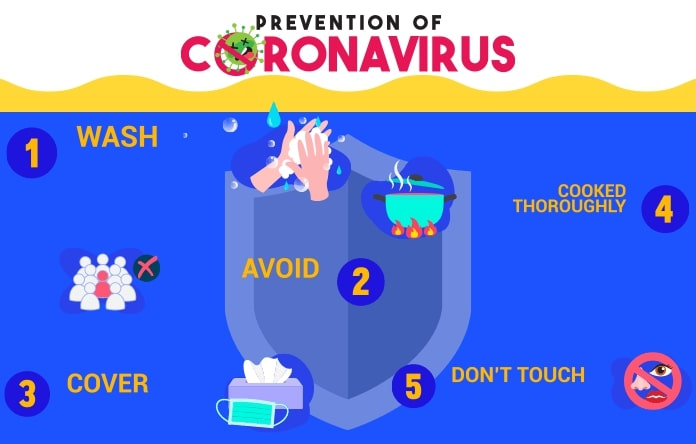

Protecting yourself and others from the spread COVID-19
- Regularly and thoroughly clean your hands with an alcohol-based hand rub or wash them with soap and water. Why? Washing your hands with soap and water or using alcohol-based hand rub kills viruses that may be on your hands
- Maintain at least 1 metre (3 feet) distance between yourself and others. Why? When someone coughs, sneezes, or speaks they spray small liquid droplets from their nose or mouth which may contain virus. If you are too close, you can breathe in the droplets, including the COVID-19 virus if the person has the disease.
- Avoid going to crowded places. Why? Where people come together in crowds, you are more likely to come into close contact with someone that has COIVD-19 and it is more difficult to maintain physical distance of 1 metre (3 feet).
- Avoid touching eyes, nose and mouth. Why? Hands touch many surfaces and can pick up viruses. Once contaminated, hands can transfer the virus to your eyes, nose or mouth. From there, the virus can enter your body and infect you.
Protect yourself and others from getting sick
